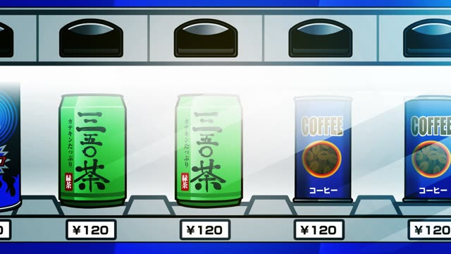

ので
Noun or な-adjective before it? Add な first.
| Word | Add | Ending | ||
|---|---|---|---|---|
| Noun | 学生 | な | ので | Since I'm a student |
| な-adjective | 静か | な | ので | Since it's quiet |
| Verb | 行く | – | ので | Since I'm going |
| い-adjective | 高い | – | ので | Since it's expensive |

YouTube · video
今日は平日なので、ちょっと空いています。
"It's a weekday today, so it's not very crowded."
ので after a sentence means because or so, like から. The reason comes first: 今日は平日 + なので = "since it's a weekday".
On this card, the sentence answers "Why is it so empty?": it's a weekday. ので sounds softer than から, like explaining the situation, so it's the one you hear most in polite talk.
After a noun or a な-adjective, put な before ので: 平日なので. Never 平日だので.

Pokémon: Indigo League · Episode 2
ポケモン誘拐の被害が目立っておりますのでご注意ください。
"Pokémon kidnappings have been on the rise, so please be careful."
In announcements and shops, ので often comes after ます or です: おります + ので. That's extra polite.

Shirokuma Cafe · Episode 45
みんなで釣ったので全員に出すよ。
"We all caught them together, so everyone gets some."
ので gives the reason, and it works in casual talk too. On this card, the plain 釣った and the よ ending keep it casual.
Quick Examples
You call your boss in the morning.
熱があるので、今日は休みます。
"I have a fever, so I'll take today off."
Verbs take ので directly. A gentle way to give a reason when asking or telling someone something.
PoliteA friend suggests a walk, but you're tired after work.
今日は疲れたので、家にいるね。
"I'm tired today, so I'll stay home."
ので works in casual talk too. It just sounds a bit softer than から.
CasualAt a hotel desk, the receptionist hands you a map.
駅は少し遠いので、バスが便利ですよ。
"The station is a bit far, so the bus is handy."
い-adjectives take ので directly. No な needed.
PoliteYou're showing a friend your neighborhood.
この辺は静かなので、好きなんです。
"It's quiet around here, so I like it."
な-adjectives work like nouns: 静か + な + ので.
PoliteWith and without
雨だから、行かない。
"It's raining, so I'm not going." Direct. Fine with friends, but can sound blunt.
雨なので、行きません。
"Since it's raining, I won't go." Softer, like you're explaining the situation. Note: 雨だから but 雨なので.
Same meaning as から (Because). The two differences: ので sounds softer and more polite, and after a noun or な-adjective it takes な (平日なので), where から takes だ (平日だから).
Examples from Media

YouTube · video
私は結構酔いやすいタイプなので、船酔いしないか心配でした。
"I'm the type who gets motion sick easily, so I was worried about getting seasick."
タイプ is a noun, so it takes な: タイプ + な + ので.

YouTube · video
私は目が悪すぎるのでめがねのレンズがとても分厚いですね。
"My eyesight is really bad, so my glasses lenses are very thick."
The reason (bad eyes) first, then what follows from it (thick lenses).

YouTube · video
たくさん人がいて、狭いので、ちょっと僕は苦手です。
"There are lots of people and it's cramped, so I'm not great with it."
Two reasons joined with て, then ので after the second one covers both.

Shirokuma Cafe · Episode 46
お薬出しますので安静にして寝てください。
"I'll give you some medicine, so rest and get some sleep."
The doctor gives the reason first, then the instruction.
Last Samurai Standing · Episode 6
私は仕事がありますので。
"I have work, so..."
ので after あります: the reason, and the rest (I must go) is left out.

PiroPito · Minecraft #06
歩き回るともう、敵に追い掛け回されて殺されるので。
"If you walk around, you get chased down and killed by enemies, [so I won't]."
The sentence stops at ので. The result is left unsaid because it's obvious.

YouTube · video
昨日は本当に大雨もう、雨がたくさん、たくさん降ったので。
"Yesterday was really heavy rain, it rained so, so much, [so...]"
Another one trailing off at ので, very common when explaining what happened.

Aggretsuko · Season 2, Episode 4
あ… 甘いので。
"Oh... because it's sweet."
い-adjective + ので, no な.
Further Reading
A Dictionary of Basic Japanese Grammar
Entry "node" · pp. 328–330
Tae Kim's Guide to Japanese Grammar
Compound Sentences · Reason or causation using 「から」 and 「ので」